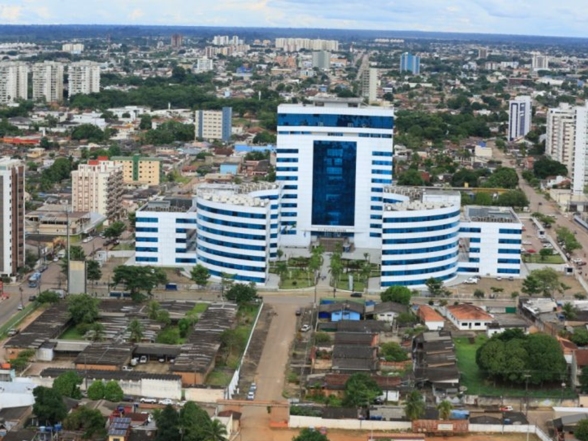

O Rondônia é um estado localizado na região Norte do Brasil, conhecido por sua forte ligação com a Amazônia e pelo crescimento econômico impulsionado pela agropecuária e pela geração de energia. Sua capital, Porto Velho, é o principal centro urbano e administrativo do estado. Rondônia possui uma população formada por pessoas de diversas regiões do país, resultado dos movimentos migratórios ocorridos ao longo do século XX, especialmente durante os projetos de ocupação da Amazônia. A economia estadual destaca-se pela produção agrícola, pecuária e pelas usinas hidrelétricas instaladas no Rio Madeira. Além de sua importância econômica, Rondônia abriga áreas de floresta amazônica e grande diversidade cultural e ambiental, desempenhando papel relevante na integração e desenvolvimento da região Norte brasileira.

voltar